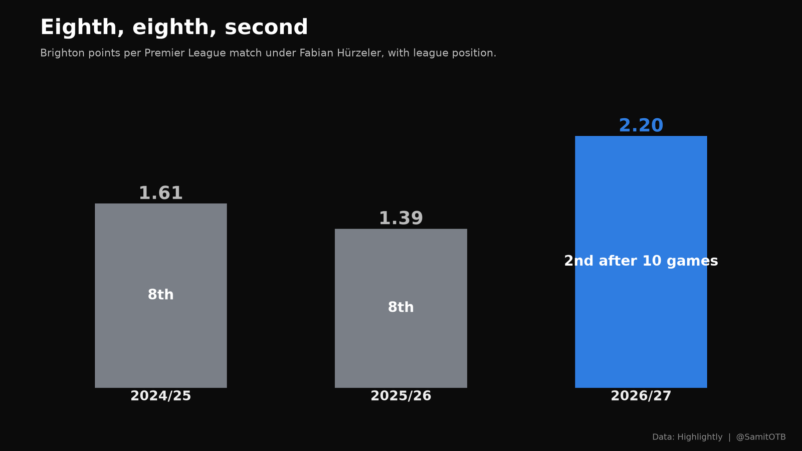
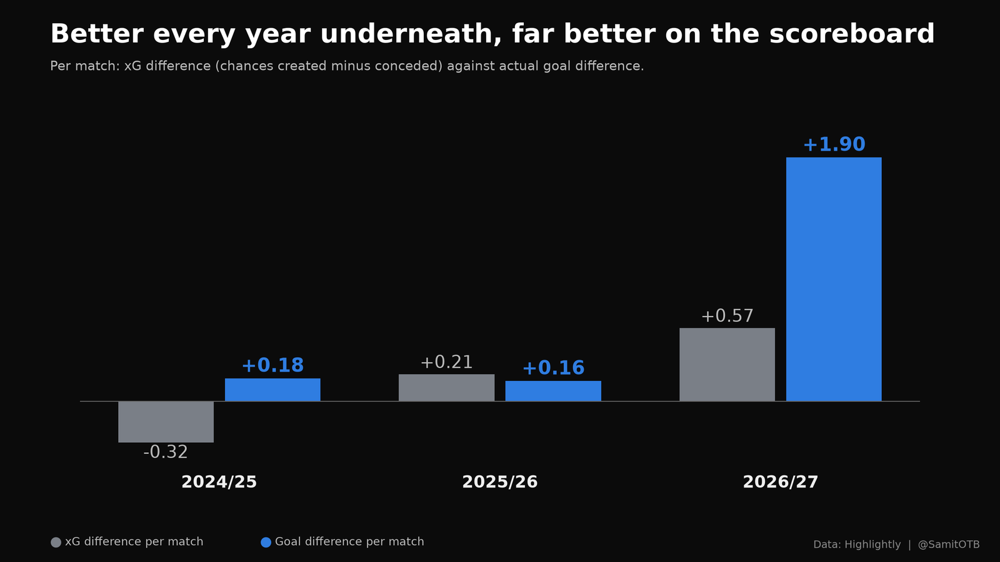
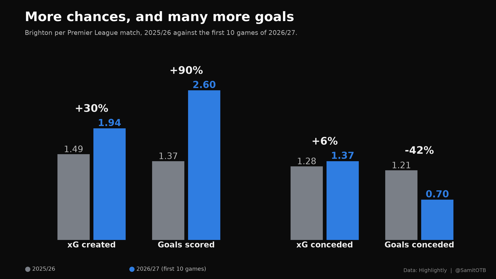
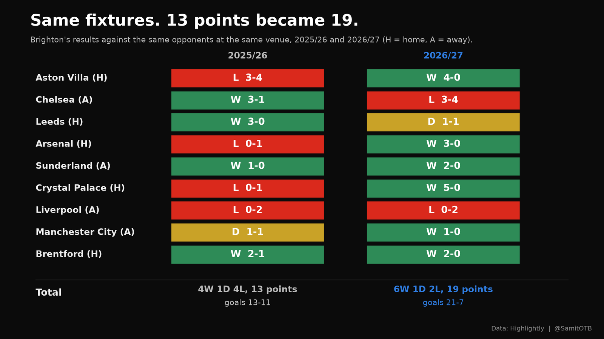
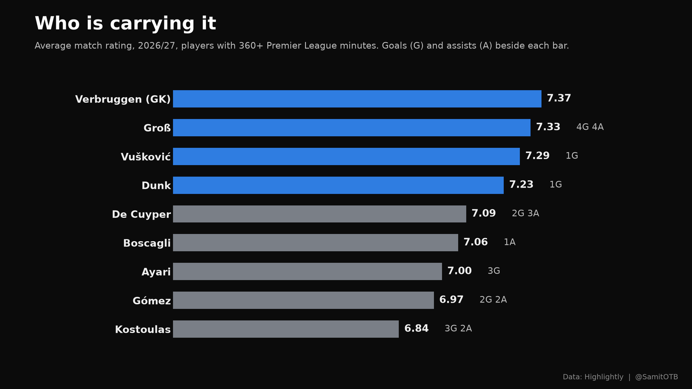
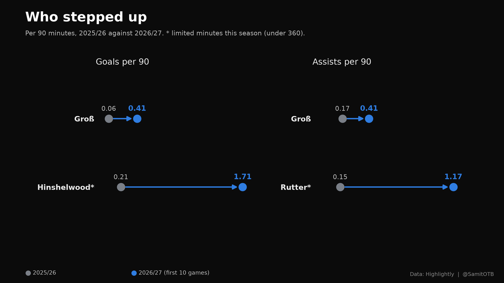

The Rise of Hürzeler’s Brighton, in Numbers
Summary
Fabian Hürzeler’s Brighton finished eighth in each of his first two seasons. Ten games into his third, they are second in the Premier League, ahead of Manchester City and Liverpool and five points behind defending champions Arsenal. I compared the three seasons match by match, with the same rules for every number. Five findings:
- Same coach, three seasons, a sudden jump. Points per match went 1.61, 1.39, then 2.20.
- Underneath, Brighton have improved every year. Their xG difference, chances created minus chances conceded, went from -0.32 a match to +0.21 to +0.57.
- On the scoreboard, they are far ahead even of that. Their goal difference is +1.90 a match. They score 0.66 goals a match more than their xG, and concede 0.67 fewer than the xG against them.
- Against the same opponents at the same grounds, 13 points became 19. Nine fixtures were played in both seasons: goals 13-11 last season, 21-7 this one.
- Pascal Groß is the standout regular. Four goals and four assists in 881 minutes, a 7.33 average rating, and his goals per 90 up from 0.06 to 0.41.
The honest reading: Brighton are genuinely better, and also running hotter than their chances. Both are in the numbers below.
Three seasons, one coach
Hürzeler became Brighton’s head coach on 15 June 2024, aged 31, the youngest permanent head coach in Premier League history. He followed Roberto De Zerbi, whose last season ended 11th. Every season in this piece is Hürzeler’s, so whatever changed, it changed under the same coach.

| Per Premier League match | 2024/25 | 2025/26 | 2026/27 (10 games) |
|---|---|---|---|
| Final position | 8th | 8th | 2nd so far |
| Points | 1.61 | 1.39 | 2.20 |
| Goals scored | 1.74 | 1.37 | 2.60 |
| Goals conceded | 1.55 | 1.21 | 0.70 |
| xG created | 1.76 | 1.49 | 1.94 |
| xG conceded | 2.08 | 1.28 | 1.37 |
The season totals match the published tables: 61 points (goals 66-59), 53 points (52-46), and 22 points from 10 games (26-7).
Finding 1: better underneath, every year

xG difference is the cleanest single measure of how a team plays: the quality of chances it creates minus the quality it allows. Brighton’s has improved in each of Hürzeler’s seasons:
| Per match | 2024/25 | 2025/26 | 2026/27 |
|---|---|---|---|
| xG difference | -0.32 | +0.21 | +0.57 |
| Goal difference | +0.18 | +0.16 | +1.90 |
This season’s attack is the main driver. Brighton create 1.94 xG a match against 1.49 last season, a 30% rise. The defense, judged by the chances it allows, has not improved: 1.37 xG conceded a match against 1.28.
The two seasons before this one also hide a twist. In 2024/25, Brighton took 61 points with a negative xG difference; in 2025/26, they took eight fewer points with a better one. Results and underlying performance do not always move together, which matters for reading this season.
Finding 2: the scoreboard is running ahead of the chances

| Per match | 2025/26 | 2026/27 | Change |
|---|---|---|---|
| xG created | 1.49 | 1.94 | +30% |
| Goals scored | 1.37 | 2.60 | +90% |
| xG conceded | 1.28 | 1.37 | +6% |
| Goals conceded | 1.21 | 0.70 | -42% |
At both ends, the goals have moved much further than the chances. Brighton score 0.66 goals a match more than their xG, after scoring 0.12 fewer last season. They concede 0.67 fewer than the xG against them, after conceding 0.07 fewer last season. Combined, their goal difference runs 1.33 a match ahead of their xG difference.
Some of that can be skill: sharper finishing, or a goalkeeper in form. Bart Verbruggen has played every minute of a run with seven goals conceded in ten games. But over a whole season, gaps this large usually narrow. The improvement in chances is the part more likely to last.
Finding 3: same fixtures, 13 points became 19

The obvious objection to comparing ten games with a full season is the fixture list. Nine of this season’s ten matches were played last season too, against the same opponent at the same ground. Scores only, no model involved:
| Fixture | 2025/26 | 2026/27 |
|---|---|---|
| Aston Villa (home) | L 3-4 | W 4-0 |
| Chelsea (away) | W 3-1 | L 3-4 |
| Leeds (home) | W 3-0 | D 1-1 |
| Arsenal (home) | L 0-1 | W 3-0 |
| Sunderland (away) | W 1-0 | W 2-0 |
| Crystal Palace (home) | L 0-1 | W 5-0 |
| Liverpool (away) | L 0-2 | L 0-2 |
| Manchester City (away) | D 1-1 | W 1-0 |
| Brentford (home) | W 2-1 | W 2-0 |
| Total | 4 wins, 1 draw, 4 defeats: 13 points, goals 13-11 | 6 wins, 1 draw, 2 defeats: 19 points, goals 21-7 |
The improvement survives the like-for-like test: six more points and a goal difference swing of 12 from the same nine fixtures. Three of last season’s home defeats, to Aston Villa, Arsenal and Crystal Palace, became wins by a combined 12-0.
Finding 4: a different way of defending
| Per match | 2025/26 | 2026/27 | Change |
|---|---|---|---|
| Opponents caught offside | 1.5 | 2.3 | +56% |
| Tackles | 17.8 | 14.5 | -18% |
| Completed dribbles | 7.0 | 5.4 | -23% |
| Brighton caught offside | 1.7 | 2.0 | +19% |
Brighton catch opponents offside far more often and make fewer tackles. That pattern fits a higher defensive line that stops attacks before they need a tackle, though event data cannot show where players stand, so treat it as a likely reading rather than a measured one. It is the tactic Hansi Flick made his trademark at Barcelona: his side caught opponents offside 65 times in his first 10 La Liga matches in 2024, 6.5 a match and the most in Europe’s big five leagues by a wide margin. Brighton’s 2.3 a match is a milder version of the same idea. In attack, they dribble less: 5.4 completed dribbles a match against 7.0 last season, so the extra goals came without any rise in dribbling.
The twelve regulars also rate higher as a group: 7.13 on average this season, against 6.87 last season.
Finding 5: who is carrying it

| Player | Minutes | Rating | Goals | Assists | Key passes | Other |
|---|---|---|---|---|---|---|
| B. Verbruggen (GK) | 900 | 7.37 | 0 | 0 | 0 | Every minute; 7 goals conceded |
| P. Groß | 881 | 7.33 | 4 | 4 | 29 | xG 2.80, xA 2.37 |
| L. Vušković | 888 | 7.29 | 1 | 0 | 1 | 62 duels won, 11 interceptions |
| L. Dunk | 749 | 7.23 | 1 | 0 | 2 | 35 duels won, 10 interceptions |
| M. De Cuyper | 827 | 7.09 | 2 | 3 | 23 | xG 2.56, xA 1.48 |
| O. Boscagli | 785 | 7.06 | 0 | 1 | 15 | 13 interceptions |
| Y. Ayari | 746 | 7.00 | 3 | 0 | 4 | 8 shots on target |
| D. Gómez | 877 | 6.97 | 2 | 2 | 11 | 22 tackles, 66 duels won |
| C. Kostoulas | 731 | 6.84 | 3 | 2 | 8 | 10 shots on target |
Groß is the hub: among players with 360+ minutes, he has the most key passes (29), the highest expected assists (2.37) and the most goals plus assists (8), ahead of De Cuyper and Kostoulas (5 each). The defense is anchored by Vušković and Dunk, with Gómez doing the most work without the ball.
Finding 6: who stepped up

The pipeline compares each player’s per-90 numbers with his own last season and reports only changes large enough to matter for his position. Three players marked * have played under 360 minutes this season, so their figures are early signs, not conclusions.
| Player | What changed (per 90, 2025/26 to 2026/27) |
|---|---|
| P. Groß | Goals 0.06 to 0.41; assists 0.17 to 0.41; shots 0.66 to 1.43, with xG per shot up from 0.12 to 0.20 |
| O. Boscagli | Key passes 0.44 to 1.72 and xA 0.05 to 0.12, while his completed passes fell from 71.6 to 50.0 |
| J. Hinshelwood* | Goals 0.21 to 1.71; shots 1.49 to 2.85, with xG per shot up from 0.17 to 0.52; rating 6.65 to 7.45 |
| G. Rutter* | Assists 0.15 to 1.17; xA 0.13 to 0.42; rating 6.61 to 7.30, though xG per shot fell from 0.10 to 0.04 |
| M. Wieffer* | Completed passes 34.5 to 62.1; interceptions 1.2 to 2.8 |
| D. Gómez | Shots 1.31 to 2.57, but xG per shot fell from 0.20 to 0.05 |
Groß is the clearest case, because his minutes are large (881 this season) and every attacking number moved: he shoots twice as often (0.66 to 1.43 shots per 90), from better positions (xG per shot 0.12 to 0.20), and creates more (assists 0.17 to 0.41 per 90). Boscagli’s change is a role change: he passes less (completed passes 71.6 to 50.0 per 90) but delivers more decisive balls (key passes 0.44 to 1.72). Gómez is the warning sign within the surge: more shots (1.31 to 2.57 per 90), from far worse positions (xG per shot 0.20 to 0.05).
What it adds up to
Brighton’s rise is real, and it is also running hot.
- Real: the xG difference has improved every season, and this season’s +0.57 a match is the best of the three. The same nine fixtures produced six more points. Groß, the team’s creative hub, is doing more of everything.
- Running hot: the goal difference runs 1.33 a match ahead of the xG difference, a gap that rarely holds over 38 games. Opta’s projection, built on underlying numbers, has Brighton finishing third with about 68 points, below their current pace of 2.2 points a match.
Ten games is a short run, and xG depends on the data provider’s model. But even if the finishing and goalkeeping cool, the chances say this is a better Brighton than either eighth-place side.
What to watch
- xG difference: the best guide to whether the rise lasts. Watch whether it stays near +0.5 a match as the finishing evens out.
- Groß’s output: he is involved in more goals than anyone else with regular minutes.
- Shot quality: Gómez and Rutter are shooting more from worse positions. If that spreads, the finishing gap will close faster.
- Next test: Hull City away on 22 November, after the international break.
This analysis was produced with Match Compare, an open tool I built. It compares one match with a baseline, or one set of matches with another, and checks every number in its written summaries against the data. Try the tool · Read the code